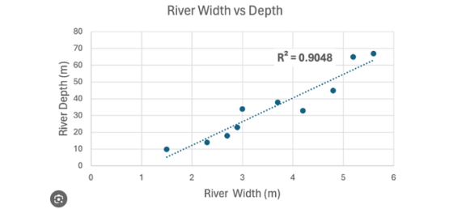
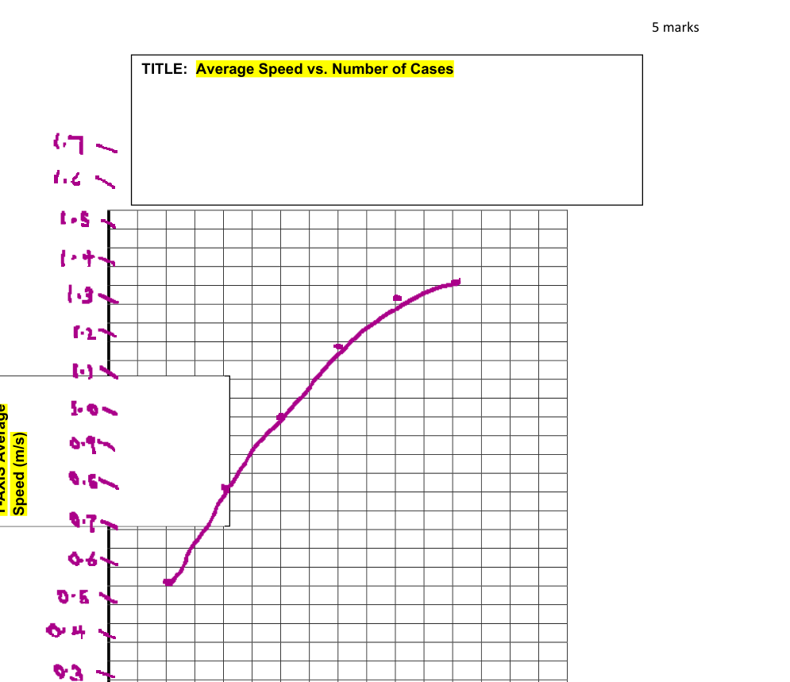

Section A: Multiple choice (15 marks)
A scientific hypothesis can be described by all of the following except:
In an experiment studying the effect of salt concentration on the boiling point of water, which is the dependent variable?
The independent variable is the factor that is:
Which of the following is a qualitative observation?
What type of data is recorded when classifying different brands of soft drink?
In an experiment on the effect of light intensity on photosynthesis, which could be controlled variables?
I. Light intensity II. Duration of light exposure III. Type of plant IV. Oxygen production
Light intensity is the IV and oxygen production is the DV.
The main purpose of repeating trials in an experiment is to:
Which of the following is not part of a well-written hypothesis?
Reading a meter from an angle (rather than directly in front) causes an error called:
If an ammeter reads 0.1 A before the circuit is even switched on, this is a:

Which best describes the correlation shown above?
Use this scenario for Questions 12 and 13. Sam, Alex, Kim and Pat are investigating magnets.
- Sam says, "This magnet picked up 12 steel paperclips."
- Alex says, "The magnet is much stronger than the one we used yesterday."
- Kim says, "If we increase the size of the magnet, then the strength of the magnetic field will increase."
- Pat says, "Magnets are the most interesting part of physics."
Whose statement is best described as an observation?
Whose statement is closest to a hypothesis?
In which stage of a scientific investigation is the risk assessment formally carried out and recorded?
Which would be an appropriate environmental consideration in a risk assessment for a plant germination experiment?
Section B: Short answer and analysis (26 marks)
A group of students is investigating falling objects, starting from this background theory.
Write a suitable research question for this experiment.
How does the number of cases in the stack affect the terminal velocity (average speed) of the falling stack?
Write a suitable hypothesis for this experiment.
If the number of cases in the stack is increased, the terminal velocity (average speed) of the stack will increase, because the mass of the stack is larger. (1 mark for the IV in the correct position, 1 mark for the DV.)
Label each variable as the independent variable (IV), dependent variable (DV) or a controlled variable (CV).
| Variable | Type |
|---|---|
| Number of cupcake cases | |
| Drop height (m) | |
| Type of paper | |
| Cross-sectional area of the cases (m2) | |
| Time to fall, from which the average speed is calculated (s) |
The students did the experiment and recorded the results below. All times were recorded by hand with a stopwatch. The drop height is 1.8 m.
| Number of cases (stacked) | Trial 1 time (s) | Trial 2 time (s) | Trial 3 time (s) |
|---|---|---|---|
| 1 | 2.21 | 2.30 | 2.18 |
| 2 | 1.65 | 1.70 | 1.68 |
| 3 | 1.46 | 0.85 | 1.42 |
| 4 | 1.25 | 1.28 | 1.22 |
| 5 | 1.15 | 1.18 | 1.12 |
| 6 | 1.11 | 1.11 | 1.13 |
Which result appears to be an outlier? The trial time for cases ( s).
Complete the table, leaving out any outliers. Average time = (trial 1 + trial 2 + trial 3) ÷ 3; average speed = drop height ÷ average time.
| Number of cases | Average time (s) | Average speed (m/s) |
|---|---|---|
| 1 | ||
| 2 | ||
| 3 | ||
| 4 | ||
| 5 | ||
| 6 |
For 3 cases, average only trials 1 and 3: (1.46 + 1.42) ÷ 2 = 1.44 s, so the speed is 1.8 ÷ 1.44 = 1.25 m/s.
On graph paper, plot average speed against the number of cupcake cases. Include a title, axis titles with units, and a smooth line of best fit. Describe your graph, then compare.
- Title, e.g. "Average speed vs number of cases" (1 mark).
- X-axis: number of cases; y-axis: average speed (m/s) (1 + 1 marks).
- A smooth curve through the points, not a straight line (2 marks): the speed rises quickly at first, then levels off.

Comment on the precision of the results for the test with 6 cases. Is it high or low, and why?
High precision (1 mark): the results are very close to each other (1.11, 1.11, 1.13 s), with very little spread (1 mark).
The biggest source of error in this experiment is reaction time.
If the reaction-time error in recording the landing is a constant amount, which results would be most affected? Why?
The smaller times (the larger stacks) are most affected (1 mark), because the reaction time is a much bigger proportion of the recorded value (1 mark).
Explain one improvement to the method that would reduce this error.
Use electronic timing (light gates) or record the fall with a slow-motion video and time it from the footage (or increase the drop height, so the times are longer).
One student suggests extending a straight line through and beyond the data to predict the average speed for 10 cases falling together.
Is this extrapolation or interpolation?
Referring to the trend in the data, comment on the reliability of this prediction.
Not very reliable (1 mark): the trend is not linear; the increase in speed levels off after about 4 cases, so a straight line extended to 10 cases would overestimate the speed (1 mark).